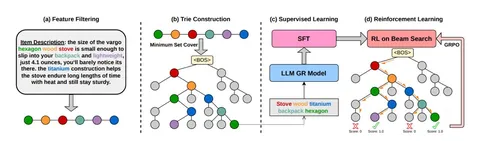

Сегодня разбираем статью о том, почему при проектировании ID айтемов стоит учитывать будущий beam search.
В генеративных рекомендациях модель предсказывает ID по токенам. Чтобы получить объект из каталога, поиск ограничивают деревом допустимых префиксов — trie. На каждом шаге beam сохраняет лучшие гипотезы, а отброшенные пути уже не возвращаются. Если первые уровни дерева слишком широкие, нужный айтем может потеряться ещё до того, как модель доберётся до различающих его признаков.
Авторы предлагают совместно строить текстовые ID и дерево, следуя двум принципам:
1) Уменьшать ветвистость, особенно в начале генерации.
2) Допускать разную длину ID для разных объектов.
Работает это так. Из метаданных извлекают информативные слова. В каждом узле выбирают небольшой набор слов, который покрывает все находящиеся там айтемы. Для этого используют greedy set cover: очередное слово покрывает максимум ещё не покрытых объектов. Затем процедуру повторяют внутри получившихся групп. Путь до объекта становится его ID. Например, общие признаки вроде жанра могут оказаться в начале, а более подробные дальше. Так детальный выбор откладывается на последующие шаги поиска.
Возникает вопрос: чем это отличается от подходов с semantic ID на основе кодбуков? В таких методах сначала получают последовательности дискретных кодов, а затем строят по ним дерево общих префиксов. BONSAI совместно проектирует текстовые ID и дерево, учитывая удобство будущего поиска. Это может помогать при ограниченном beam; текстовые признаки также позволяют использовать знания предобученной LLM. Но в статье не изолируют эффект выбора способа кодирования при одинаковых остальных компонентах.
Рекомендательная модель — предобученная Qwen3‑1.7B. История пользователя подаётся текстом: каждый айтем представлен последовательностью слов-признаков, выбранных из его метаданных. Эта последовательность читается вдоль пути от корня дерева до листа айтема и после токенизации становится входом LLM. Если у айтема несколько допустимых путей, для SFT выбирают самый длинный. Айтемы истории перечисляют в хронологическом порядке. Сначала модель обучают на правильном следующем объекте через SFT, затем дообучают с GRPO, поощряя попадание в целевой айтем при constrained beam search.
На Amazon Beauty, Sports и Toys BONSAI превосходит GRLM по Recall и NDCG. Максимальный относительный прирост — 21,6% по Recall@10 на Toys. Результаты относятся ко всему пайплайну с обучением, а перенос на промышленный каталог потребует проверки.
@RecSysChannel
Разбор подготовила
